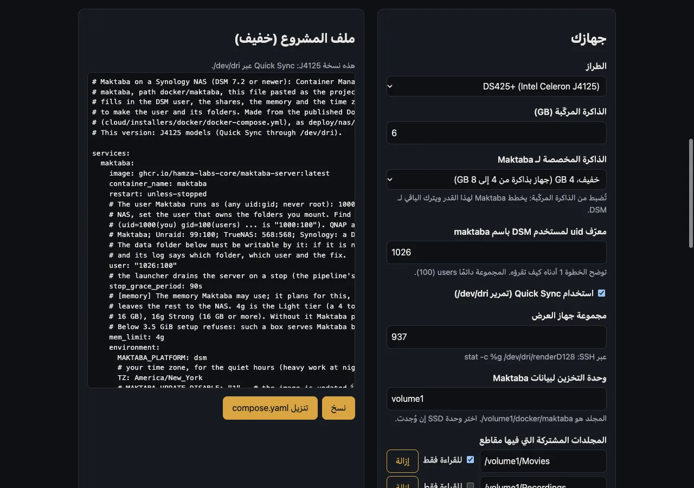

قبل أن تبدؤوا
- حساب في DSM بصلاحيات المدير، وتطبيق Container Manager من مركز الحزم.
- وحدة تخزين SSD إن كانت في الجهاز، فيها يحفظ البرنامج قاعدة بياناته، فيصبح التصفح أسرع.
- المجلدات المشتركة التي تحفظ مقاطعكم، وأيّها يُسمح للبرنامج بالكتابة فيه.
خادم التخزين عندكم
أجيبوا عن أسئلة قليلة عن خادم التخزين عندكم، فتكتب الصفحة ملف المشروع لكم.
نصيحة: تبقى إجاباتكم في هذه الصفحة، ولا يُرسَل شيء مما تكتبونه إلى أي مكان.

خطوةً خطوة
أنشئوا مستخدمًا للبرنامج
من لوحة التحكم Control Panel → User & Group، أنشئوا المستخدم
maktabaبكلمة مرور قوية، ومن دون صلاحيات المدير.أنشئوا مجلد البرنامج
في File Station، أنشئوا المجلد
maktabaداخل المجلد المشتركdocker، وامنحوا المستخدمmaktabaإذن القراءة والكتابة عليه.تحذير: إن لم يستطع المستخدم
maktabaالكتابة فيdocker/maktaba، يتوقف المشروع فورًا، ويذكر سجلّه اسم المجلد. فامنحوه إذن القراءة والكتابة هناك، وشغّلوا المشروع من جديد.شاركوا مجلدات المقاطع
من Control Panel → Shared Folder، امنحوا
maktabaإذن القراءة فقط على كل مجلد فيه مقاطع، أو القراءة والكتابة حيث يُسمح للبرنامج بحفظ الترجمات.أنشئوا المشروع
من Container Manager → Project → Create، سمّوه
maktaba، واختاروا المسارdocker/maktaba، والصقوا ملف المشروع، ثم «Next» و«Done».services: maktaba: image: ghcr.io/hamza-labs-core/maktaba-server:latest container_name: maktaba restart: unless-stopped user: "1026:100" stop_grace_period: 90s mem_limit: 4g environment: MAKTABA_PLATFORM: dsm TZ: Asia/Riyadh network_mode: host volumes: - /volume1/docker/maktaba:/var/lib/maktaba - /volume1/Movies:/volume1/Movies:roأكملوا الإعداد
حين يعمل المشروع، افتحوا طرفيّته (Container → maktaba → Details → Terminal → Create) وشغّلوا:
/opt/maktaba/server/bin/maktaba-server container setup
بعد الإعداد
يعمل البرنامج الآن على خادم التخزين. افتحوه من أي متصفح داخل البيت، وسيأخذكم في بقية الخطوات.